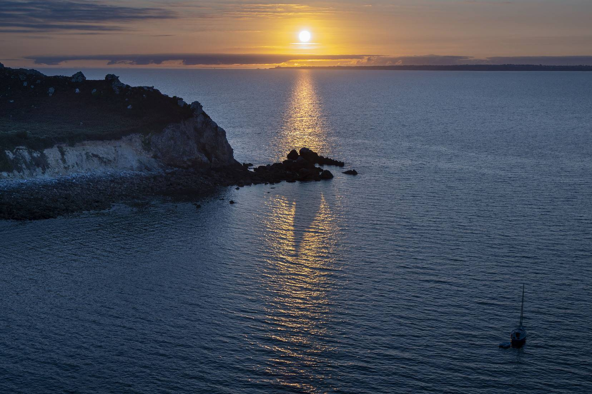

Photo : Jean-Luc BoulardSe former, sortir,
projeter, exposer
Une saison riche et variée pour progresser en photographie, du premier déclenchement à l'exposition.
Initiation et formation
Initiation théorique et pratique à la prise de vue : prise en main du matériel, bases de la photo, techniques avancées, labo numérique.
Soirées d'analyse d'image
Réunions d'analyse d'image pour travailler la composition et regarder les photos autrement.
Réunion mensuelle
Le dernier mercredi du mois à 20 h : photos des membres, conseils techniques et nouveautés.
Sorties et stages
Sorties et stages à thèmes, techniques ou artistiques, théoriques ou pratiques.
Projections et diaporamas
Montage de diaporamas numériques, avec ordinateur et vidéoprojecteur mis à disposition par le club.
Initiation studio
Séances d'initiation en studio avec le matériel adéquat : flashes, boîte à lumière, fonds.
Expositions
Six à sept expositions par an, créées, organisées et gérées par le club, à Sens et dans le Sénonais.
Concours
Participation possible aux concours régionaux et nationaux, le club étant adhérent à la Fédération Photographique de France.
Cinéma et vidéo
Le nom du club fait la part belle à l'image animée.
Où et quand nous retrouver
Réunion mensuelle : échanges sur les photos des membres, conseils techniques et nouveautés. Tous les derniers mercredis du mois à 20 h.
Le samedi matin, de 11 h à 12 h, au local du club, ou sur rendez-vous (téléphoner de préférence avant).
Lieu : Espace Saint Savinien, entrée 3 place Étienne Dolet, 89100 Sens.
Au club (Espace Saint Savinien, Sens) — à confirmer avant votre première venue
| Réunion mensuelle | Dernier mercredi du mois, 20 h |
|---|---|
| Permanence au local | Samedi, 11 h – 12 h, ou sur rendez-vous |
| Expositions | En général tous les jours, 10 h – 12 h et 14 h – 18 h, entrée libre |
| Contact | 06 30 68 94 77 · contact@photoclubsenonais.fr |